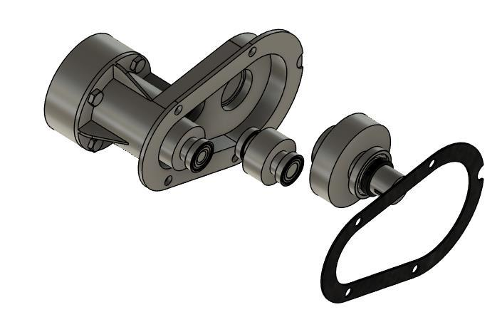
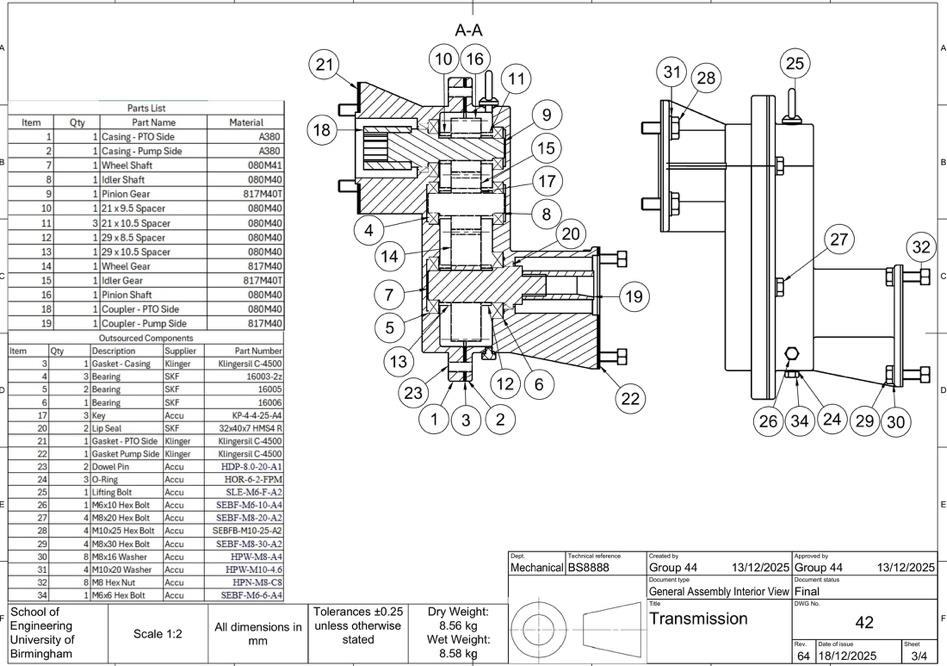

Designed a 2:1 gear train with SKF bearings sized for 12,000-hour L10 life.

Specifications
- Design a gear reduction unit to take 6.2 kW from an engine power take-off at 2,800 rpm to drive a hydraulic oil pump at 1,400 rpm
- Design gears to have a 20,000-hour life cycle and bearings to have 12,000-hour life cycle
Contribution
- Sized an 18–19–36 tooth spur gear train in GP100, including an idler to keep pump rotation, giving 2:1 overall ratio.
- Calculated bearing loads and selected SKF bearings in Romax Concept for a 12,000 h L10 life using design FMEA methods
- Designed for assembly by adding notches in the gasket and casing, and designing shaft and components with key insert
Outcomes & Lessons Learnt
- Selected materials for components based on minimum required strength to reduce cost while maintaining quality
- Learned how to draw complex components to BS 8888 standards with GD&T to effectively communicate designs without redundant drawings
